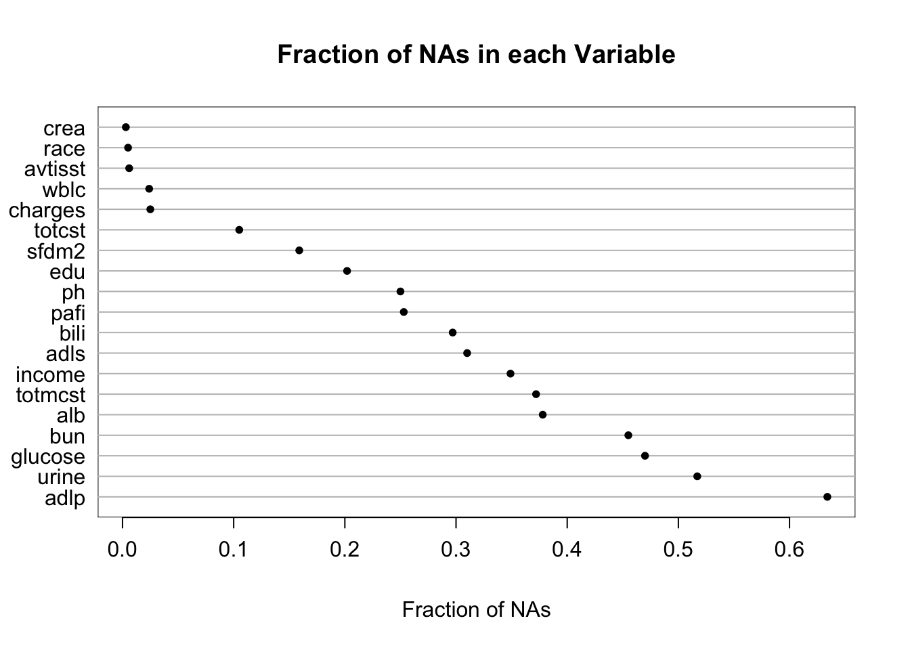
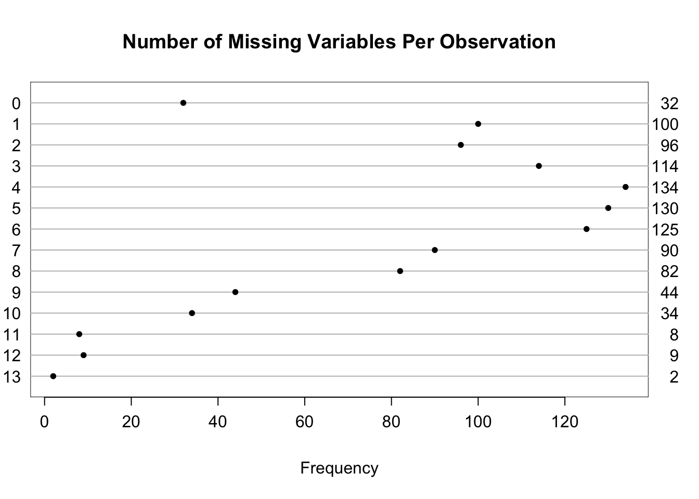
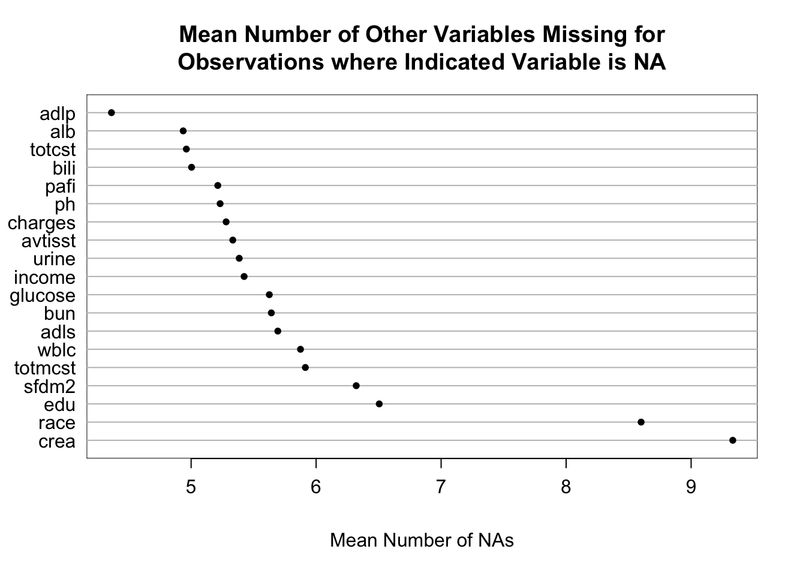
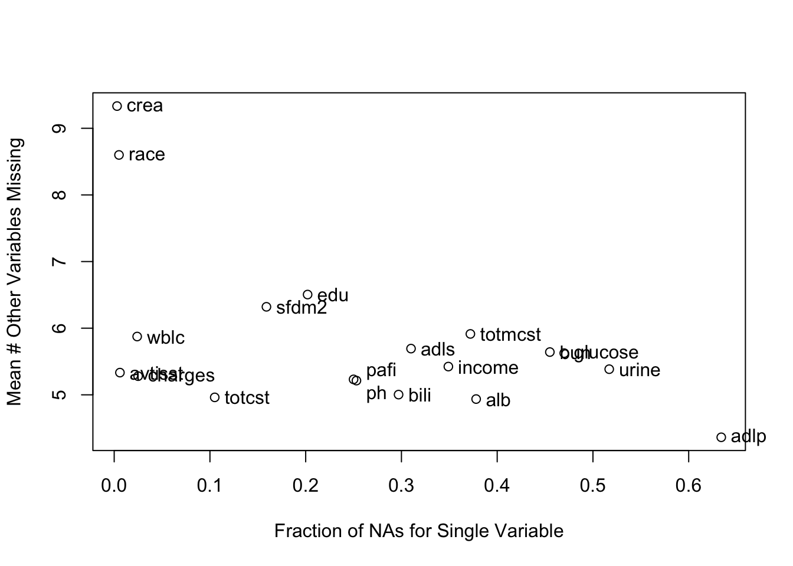
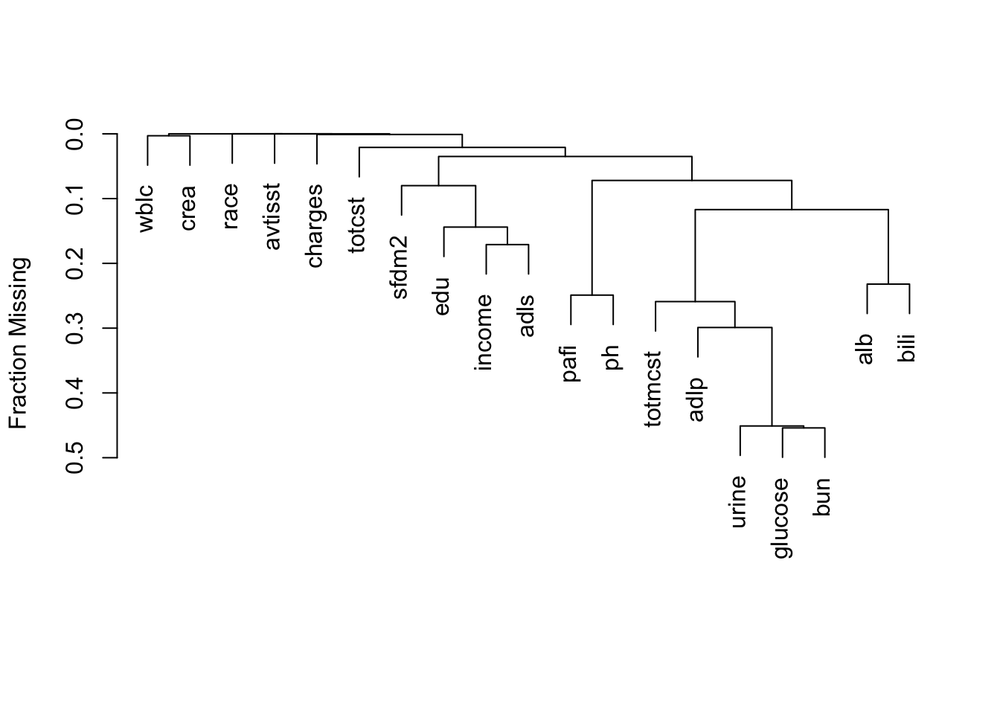
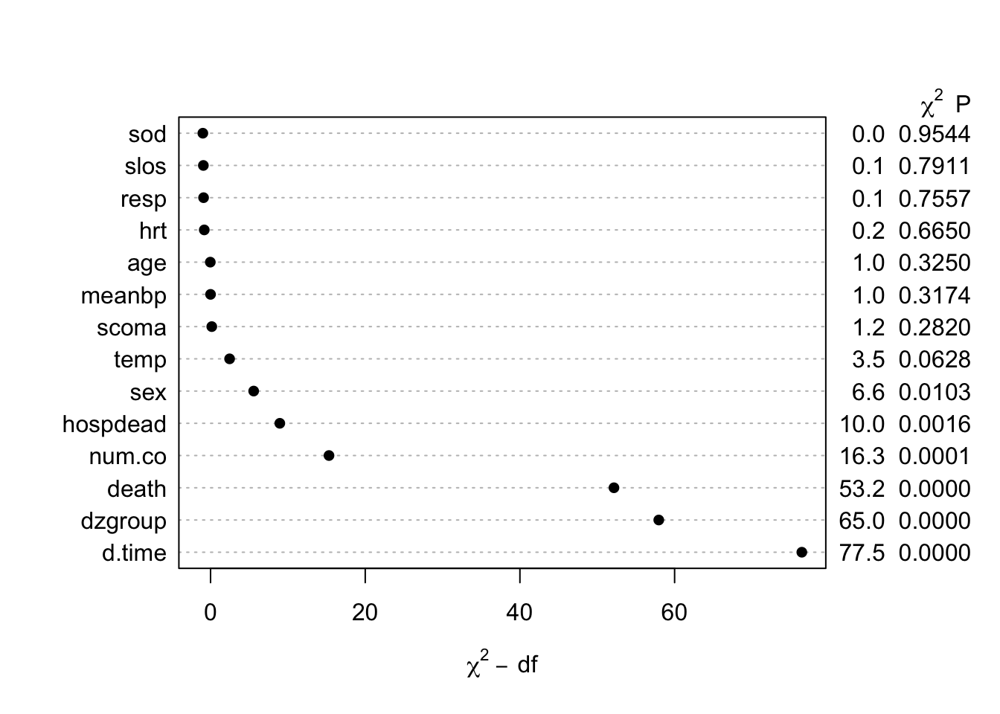

flowchart LR Ext[Extent of NAs] --> PV[Per Variable] & PO[Per Observation] P[Patterns] --> Cl[Clustering of Missingness] P --> Seq[Sequential Exclusions] P --> Rel[Extent of Association<br>Between Values of<br>Non-missing Variables<br>and Number of Variables<br>Missing per Observation]
6 Missing Data
It is extremely important to understand the extent and patterns of missing data, starting with charting the marginal fraction of observations with NAs for each variable. The occurrence of simultaneous missings on multiple variables makes multiple imputation and analysis more difficult, so it is important to correlate and quantify missingness in variables multiple ways. The Hmisc package naclus, naplot, and combplotp functions provide a number of graphics along these lines.
The missChk function in qreport uses these functions and others to produces a fairly comprehensive missingness report, placing each output in its own tab. When the number of variables containing any NA is small, the Hmisc na.pattern function’s simple output is by default all that is shown, and only one sentence is produced if there are no variables with NAs. Here is an example using again the the 1000-patient support dataset on hbiostat.org/data, retrieved with the Hmisc function getHdata. Variables with no missing values are excluded from the report (except for being used in the predictive model at the end) to save space. The chart in the next-to-last tab is interactive. We also use the prednmiss options to run an ordinal logistic regression model to predict the number of missing variables from the values of all the non-missing variables, omitting the predictor dzclass because it is redundant with the variable dzgroup. The results of this analysis are in the last tab.
require(Hmisc)
require(data.table)
require(qreport) # Define dataChk, missChk, maketabs, ...
getHdata(support)
# Make it into a data table
setDT(support)
# Remove one variable we'll not be using
support[, adlsc := NULL]
missChk(support, prednmiss=TRUE, omitpred = ~ dzclass)15 variables have no NAs and 19 variables have NAs
support has 1000 observations (32 complete) and 34 variables (15 complete)
| Minimum | Maximum | Mean | |
|---|---|---|---|
| Per variable | 0 | 634 | 141.6 |
| Per observation | 0 | 13 | 4.8 |
| 0 | 3 | 5 | 6 | 24 | 25 | 105 | 159 | 202 | 250 | 253 | 297 | 310 | 349 | 372 | 378 | 455 | 470 | 517 | 634 |
|---|---|---|---|---|---|---|---|---|---|---|---|---|---|---|---|---|---|---|---|
| 15 | 1 | 1 | 1 | 1 | 1 | 1 | 1 | 1 | 1 | 1 | 1 | 1 | 1 | 1 | 1 | 1 | 1 | 1 | 1 |
| 0 | 1 | 2 | 3 | 4 | 5 | 6 | 7 | 8 | 9 | 10 | 11 | 12 | 13 |
|---|---|---|---|---|---|---|---|---|---|---|---|---|---|
| 32 | 100 | 96 | 114 | 134 | 130 | 125 | 90 | 82 | 44 | 34 | 8 | 9 | 2 |

support




| adlp | urine | alb | pafi | income | adls | bili | totcst | sfdm2 | wblc |
|---|---|---|---|---|---|---|---|---|---|
| 634 | 192 | 70 | 34 | 16 | 11 | 6 | 2 | 2 | 1 |
Logistic Regression Model
rms::lrm(formula = as.formula(form), data = d)
Frequencies of Responses
0 1 2 3 4 5 6 7 8 9 10 11 12 13 32 100 96 114 134 130 125 90 82 44 34 8 9 2
| Model Likelihood Ratio Test |
Discrimination Indexes |
Rank Discrim. Indexes |
|
|---|---|---|---|
| Obs 1000 | LR χ2 197.64 | R2 0.181 | C 0.660 |
| max |∂log L/∂β| 2×10-8 | d.f. 20 | R220,1000 0.163 | Dxy 0.319 |
| Pr(>χ2) <0.0001 | R220,988.6 0.164 | γ 0.319 | |
| Brier 0.215 | τa 0.287 |

The likelihood ratio \(\chi^2\) test in the last tab is a test of whether any of a subject’s non-missing variable values are associated with the number of missing variables on the subject. It shows strong evidence for such associations. From the dot chart we see that the strongest predictors of missing baseline variables are time to death/censoring and disease group. This may be due to patients on ventilators not being able to provide as much baseline information such as activities of daily living (adlp), and being on a ventilator is a strong prognostic sign. There is a possible sex effect worth investigating.